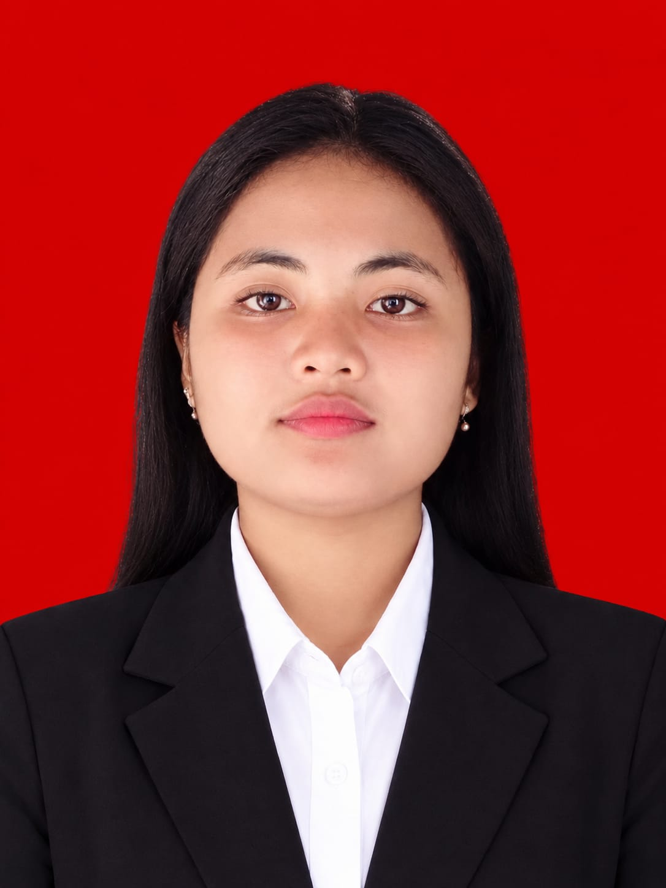

01
SMA Negeri 1 Gomo
Pendidikan menengah atas.
Pendidikan SebelumnyaMahasiswa Pendidikan Guru Pendidikan Anak Usia Dini (PG-PAUD) di Universitas Negeri Medan. Saya tertarik pada dunia anak usia dini, kreativitas, dan pengembangan pengalaman belajar yang menyenangkan serta bermakna.
Selamat datang di halaman web saya. Saya siap berkolaborasi dan membantu kebutuhan proyek Anda dengan profesional.
Hubungi Saya
Belajar melalui keterlibatan langsung, pengalaman, dan kegiatan bermain yang bermakna.
Saya adalah mahasiswa PG-PAUD yang senang mempelajari cara menciptakan pengalaman belajar yang menyenangkan, kreatif, dan sesuai dengan kebutuhan anak usia dini. Saya tertarik mengembangkan media pembelajaran yang membantu anak belajar melalui bermain.
Di luar perkuliahan, saya juga memiliki pengalaman mendampingi anak melalui kegiatan Sekolah Minggu. Pengalaman ini mengajarkan saya pentingnya kesabaran, komunikasi, kerja sama, serta menciptakan suasana yang nyaman dan positif bagi anak.
Setiap tahap pendidikan menjadi bagian dari proses saya dalam membangun pengetahuan dan mempersiapkan diri untuk berkontribusi di bidang pendidikan.
Pendidikan menengah atas.
Pendidikan SebelumnyaProgram Studi Pendidikan Guru Pendidikan Anak Usia Dini (PG-PAUD).
Pendidikan TinggiPengalaman yang membentuk kepedulian, tanggung jawab, dan semangat saya untuk terus belajar.
Pengalaman lapangan di TK Santo Thomas 2 Medan untuk mengenal lingkungan sekolah, mengamati proses pembelajaran, dan memahami kegiatan pendidikan anak usia dini.
Pengalaman LapanganKeterlibatan dalam organisasi menjadi ruang untuk membangun kebersamaan, tanggung jawab, kepedulian, dan kemampuan bekerja sama.
OrganisasiMendampingi anak dalam kegiatan Sekolah Minggu dan belajar membangun suasana yang ramah, nyaman, serta mendukung perkembangan anak.
Pendampingan AnakPortofolio ini mendokumentasikan proses belajar saya dalam mengembangkan ide dan media pembelajaran PAUD.
Media permainan edukatif yang dirancang untuk mendukung stimulasi kemampuan kognitif anak melalui kegiatan bermain.
Rancangan materi dan kegiatan pembelajaran sebagai bagian dari proses belajar dan pengembangan kompetensi di bidang PAUD.
Berbagai gagasan kreatif dan media pembelajaran untuk mendukung eksplorasi, kreativitas, dan pengalaman belajar anak.
Saya terbuka untuk berbagi gagasan seputar pendidikan anak usia dini. Portofolio ini mendokumentasikan proses belajar saya, dan saya senang berkolaborasi serta bertukar pengalaman untuk terus bertumbuh.
Terima kasih telah mengunjungi website portofolio saya. Saya senang dapat berbagi perjalanan akademik, pengalaman, dan karya di bidang pendidikan anak usia dini.
✉ widacitrapurnamasaritafonao@gmail.com